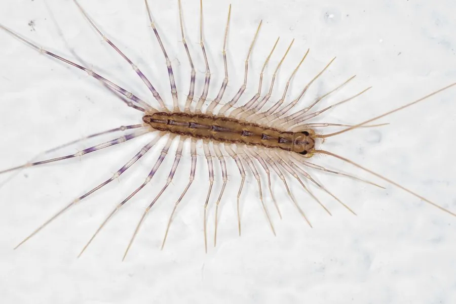

昆虫 · 动物界
蚰蜒 Scutigera coleoptrata

身体细长、足极长的唇足类，俗称草鞋底，常出现在阴暗潮湿的墙角，捕食蜘蛛、蟑螂等小动物，对人基本无害。
- 分类
- 门节肢动物门纲唇足纲目蚰蜒目科蚰蜒科属蚰蜒属
- 栖息环境
- 阴暗潮湿的墙角、石缝、落叶层和地下室
- 地理分布
- 中国大部分地区，以及欧洲、北美等温暖地区
- 保护级别
- IUCN 暂无评估；中国未列入国家重点保护名录
物种志
蚰蜒体长 2–3 cm，身体由十几节组成，背面灰褐或黄褐色，有三条深色纵纹；最醒目的是 15 对细长的步足，最后一对特别长，像天线一样向后伸展。它属于唇足纲，并不是真正的昆虫，触角长而灵敏，复眼由许多小眼组成。
它分布广泛，在中国大部分地区、欧洲和北美都能见到，喜欢阴暗潮湿的墙角、石缝、落叶层和地下室，夜间出来捕食蜘蛛、蟑螂、衣鱼、白蚁等小型无脊椎动物。蚰蜒行动迅速，能用长足钻进狭小缝隙，遇险时可能自割部分步足逃生，步足脱落后可再生。它的颚足有毒腺，但毒性弱，偶尔咬人仅引起轻微红肿，通常会避开人类；蚰蜒喜欢潮湿，因此常被当作环境湿度的指示动物，目前尚无保护评估。
形态与习性
- 食性捕食蜘蛛、蟑螂、衣鱼和白蚁等
- 体长2–3 cm，有 15 对长足
- 识别体侧长足密集，最后一对足特别长
- 习性夜行性，行动迅速，喜潮湿环境
- 防御遇险可自割步足逃生，断足可再生
- 毒性颚足有毒腺但毒性弱，咬人仅轻微红肿
趣味知识
- 蚰蜒有 15 对细长的步足，跑起来像一条快速移动的流苏。
- 它属于唇足纲，和蜈蚣是近亲，并不是真正的昆虫。
- 遇到危险时它会断掉几条腿逃跑，断掉的步足还能慢慢再生。